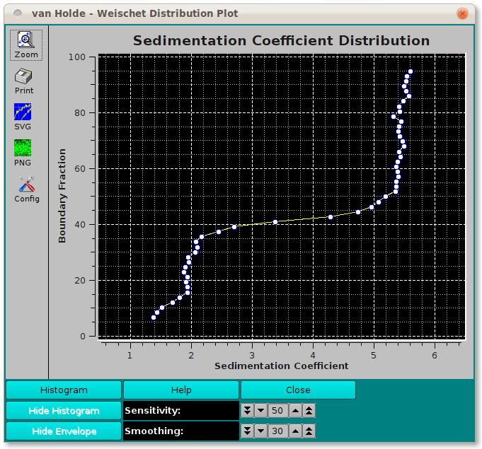
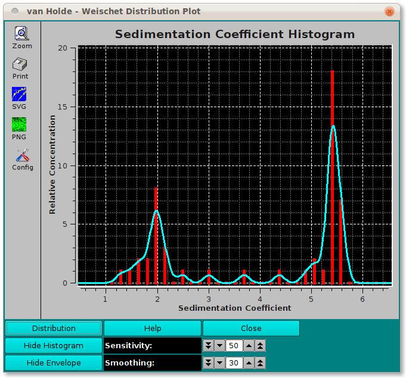

UltraScan vHW Distribution Plot:
In the van Holde - Weischet (vHW) Enhanced program, there is a Distribution Plot
option that brings up a dialog in which the vHW analysis data is displayed
as a distribution plot or a histogram plot. In either case, a clustering of data
around several sedimentation coefficient points indicates the presence of
multiple species in the solution.

-
Histogram Click on this button to change the plot from
Distribution to Histogram.
-
Distribution Click on this button to change the plot from
Histogram to Distribution. This is the alternate label to the same
button as above.
-
Hide Histogram Select hiding the histogram, showing only an envelope.
The alternate label for this button is Show Histogram
-
Hide Envelope Select hiding the envelope, showing only a histogram.
The alternate label for this button is Show Envelope
-
Sensitivity Change the sensitivity factor up or down to primarily
affect the nature of the histogram.
-
Smoothing Change the smoothing factor up or down to primarily
affect the nature of the envelope.
-
Help: Display detailed vHW Distribution/Histogram Plot help.

 Manual
Manual